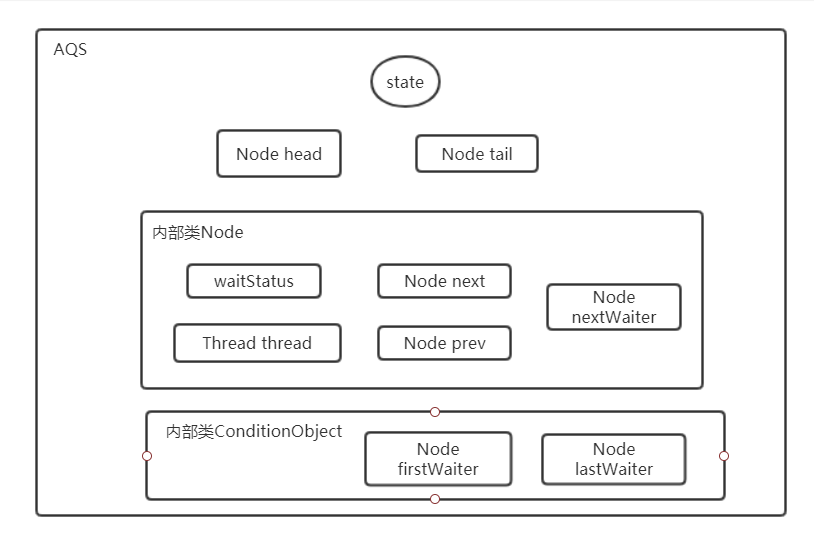
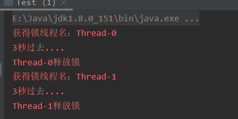

原文连接:https://www.cnblogs.com/zhangweicheng/p/12000213.html
AQS是JUC包中许多类的实现根基，这篇文章只是个人理解的产物，不免有误，若阅读过程中有发现不对的，希望帮忙指出[赞]!
1 AQS内脏图
在开始了解AQS之前，我们先从上帝视角看看AQS是由几个部分组成的。

AQS内部维护了一个volatile修饰的资源变量，里面的所有操作都可以说跟这个变量有关系，因为它代表的就是资源，这是一点；另外内部还有为公平争夺资源而准备的同步队列，说是同步队列，实质上存放在AQS的也就head节点和tail节点；此外还有一个等待队列，等待队列是为了实现唤醒指定组线程争夺资源而出现的，通过内部类ConditionObject的firstWaiter和lastWaiter实现，两个队列的概念图如下。

除去这些还有两个内部类Node和ConditionObject，Node是队列的实现根基，里面存放了许多重要的信息，如操作的线程、线程竞争的状态等；而ConditionObject则是Condition接口的实现类，用来实现唤醒指定线程组的(等待队列)。
state：资源变量，AQS重要组成成分，其内部的操作大多数都是对此资源的竞争。
head和tail节点：这两个Node节点其实就是AQS中的同步队列，而Node是AQS的内部类，整个资源争夺的过程就是Node同步队列节点的调整和状态变更的过程。
Node内部类：AQS两个队列的实现节点。
waitStatus:节点状态，取值为-3~1(整数)。
0：初始状态或者不代表任何意义时的取值。
-1：SIGNAL状态，个人理解是处于这个状态的节点后方还有可用的节点，所以当其释放资源 时要提醒后方节点参与竞争。
-2：CONDITION状态，这个状态标识当前节点处于等待队列中，等待队列中的节点不会参与 竞争，必须从等待队列出来后重新加入同步队列才能参与竞争。
-3：PROPAGATE，表示处于共享模式，此时不仅只是唤醒下个节点，还可能唤醒下下个节 点。
1：CANCELLED，废弃节点，表示当前节点没用了，处于该状态的节点不会再改变，所以AQS中经常会判断节点状态是否大于0来检查节点是否还有用。
thread：争夺资源的线程，存放在节点当中。prev：同步队列中的上一个节点。next：同步队列的下一个节点。nextWaiter：下一个等待节点。AQS中的等待队列，可以有多个等待队列。
ConditionObject：AQS内部类，实现Condition接口，定义了两个变量firstWaiter和lastWaiter，这 两个变量 组成等待队列。可以简单的理解为Condition接口的功能是能让一定数量的线程一起等待某个条件，这个条件就是condition，当condition唤醒的时候，那么这些等待的线程就会被其唤醒，反之线程则一直等待其唤醒条件。而在AQS中，ConditionObject可以维护多个等待队列，当同步队列中的节点使用了await()方法则将其移除同步队列放入相应的等待队列，在等待队列中使用signal方法则从等待队列中移除放入同步队列队尾。
2 AQS的开放方法
现在我们对AQS的组成有了大概的了解，接下来看看其内部资源的竞争、获取和释放的实现。AQS采用模板设计模式实现，其定义了许多顶级方法例如acquire、release等，这些方法子类不能重写但是可以调用，而如果想让其正确的调用则需要根据其规则实现开放出来的接口如tryAcquire等（顶级方法内部调用了开放方法）。
其开放的方法有tryAcquire、tryRelease、tryAcquireShared、tryReleaseShared、isHeldExclusively共五种，每个方法里面没有具体的实现，反而是直接抛出了异常，如下，所以子类需要重写用到的方法。
protected boolean tryAcquire(int arg) {
throw new UnsupportedOperationException();
} 这些方法表示尝试去获取资源或者释放资源，其实现必须要跟state资源状态相关，举个例子，tryAcquire方法表示以独占的方式尝试获取资源，如果获取到了那么其他线程不得操作其资源，其中入参的arg则表示想要获取到的资源数量，例如我tryAcquire(5)成功了，那么状态变量state变量则增加5，如果tryRelease(5)成功则state状态变量减少5，等到state==0的时候则表示资源被释放，即可以理解为锁被释放。
如果只是使用AQS的话，再加上几个变更状态的方法就可以了，我们不需要了解更多的东西，如同AQS的文档给出的案例一般，简单的重写几个方法便可以实现一种锁，如下，一个不可重入锁的简单实现。
class Mutex implements Lock, java.io.Serializable {
// 同步内部类，锁的真正操作都是通过该类的操作
private static class Sync extends AbstractQueuedSynchronizer {
// 检查当前是否已经处于锁定的状态
protected boolean isHeldExclusively() {
return getState() == 1;
}
// 如果资源变量为0，则获取锁（资源）
public boolean tryAcquire(int acquires) {
// acquires的值只能是1，否则的话不进入下面代码
assert acquires == 1;
if (compareAndSetState(0, 1)) {
// 设置持有当前锁的线程
setExclusiveOwnerThread(Thread.currentThread());
return true;
}
return false;
}
// 通过将状态变量state设定为0来表示锁的释放
protected boolean tryRelease(int releases) {
// 传入的参数只能是1，否则是无效操作
assert releases == 1;
// 如果状态状态等于0，说明不是锁定状态
if (getState() == 0) throw new IllegalMonitorStateException();
setExclusiveOwnerThread(null);
setState(0);
return true;
}
// 提供Condition，返回其AQS内部类ConditionObject
Condition newCondition() { return new ConditionObject(); }
// 反序列化
private void readObject(ObjectInputStream s)
throws IOException, ClassNotFoundException {
s.defaultReadObject();
setState(0); // reset to unlocked state
}
}
// 内部类已经实现了所有需要的方法，我们只要封装一层就行
private final Sync sync = new Sync();
public void lock() { sync.acquire(1); }
public boolean tryLock() { return sync.tryAcquire(1); }
public void unlock() { sync.release(1); }
public Condition newCondition() { return sync.newCondition(); }
public boolean isLocked() { return sync.isHeldExclusively(); }
public boolean hasQueuedThreads() { return sync.hasQueuedThreads(); }
public void lockInterruptibly() throws InterruptedException {
sync.acquireInterruptibly(1);
}
public boolean tryLock(long timeout, TimeUnit unit)
throws InterruptedException {
return sync.tryAcquireNanos(1, unit.toNanos(timeout));
}
}进行一个小测试
public static void main(String[] args) {
Lock lock = new Mutex();
new Thread(() -> {
lock.lock();
try {
System.err.println("获得锁线程名：" + Thread.currentThread().getName());
TimeUnit.SECONDS.sleep(3);
} catch (InterruptedException e) {
e.printStackTrace();
} finally {
lock.unlock();
System.err.println(Thread.currentThread().getName() + "释放锁");
}
}).start();
new Thread(() -> {
lock.lock();
try {
System.err.println("获得锁线程名：" + Thread.currentThread().getName());
TimeUnit.SECONDS.sleep(3);
} catch (InterruptedException e) {
e.printStackTrace();
} finally {
lock.unlock();
System.err.println(Thread.currentThread().getName() + "释放锁");
}
}).start();
}最终的结果图如下

这样就实现了一个不可重入锁，是不是看起来很简单？
AQS的那些顶级方法
首先来看acquire方法：
// 代码逻辑不复杂，首先尝试获取资源，如果失败了则将封装节点放入同步队列中直到获取到资源
public final void acquire(int arg) {
// 尝试获得锁，如果失败了则增加节点放入等待队列中
if (!tryAcquire(arg) &&
acquireQueued(addWaiter(Node.EXCLUSIVE), arg))
selfInterrupt();
} 其中addWaiter将当前线程封装成一个节点放入等待队列中，而acquireQueued方法则是在一个循环中尝试获取资源，如果获取资源的过程中被线程被打断不会进行任何形式的相应，只是记录一下当前节点被打断过，在获取到资源后再把被打断的逻辑补上。
我们看看addWaiter做了什么。
private Node addWaiter(Node mode) {
// 将当前线程封装入一个节点之中
Node node = new Node(Thread.currentThread(), mode);
// 首先尝试一次快速的入队，如果失败的话则采用正常方式入队
Node pred = tail;
if (pred != null) {
node.prev = pred;
if (compareAndSetTail(pred, node)) {
pred.next = node;
return node;
}
}
// 入队操作
enq(node);
return node;
}再看下入队操作的实现
private Node enq(final Node node) {
// 循环直到将节点放入同步队列中
for (;;) {
Node t = tail;
// 如果同步队列是空的话则进行队列的初始化
if (t == null) {
// 这里注意初始化的时候head是一个新增的Node，其waitStatus为0
if (compareAndSetHead(new Node()))
tail = head;
} else {
// 否则的话尝试设置尾节点，失败的话重新循环
node.prev = t;
if (compareAndSetTail(t, node)) {
t.next = node;
return t;
}
}
}
} 到这里我们可以知道addWaiter方法首先将当前线程封装为节点，然后尝试快速的将节点放入队列尾，如果失败的话则进行正常的入队操作，而入队操作的则是不断的循环将当前节点设置为尾节点，其中如果一开始队列为空的话则进行队列的初始化。
再回到acquire方法中这一段代码中
if (!tryAcquire(arg) &&
acquireQueued(addWaiter(Node.EXCLUSIVE), arg)) 节点入队之后还有一个acquireQueued操作，这个方法就是线程不断自旋的去获取资源的过程，在一定尝试后进入阻塞。我们进入此方法
final boolean acquireQueued(final Node node, int arg) {
// 默认获取失败
boolean failed = true;
try {
/*
* 线程打断标识，我们知道使用interrupt()方法只是改变了线程中的打断标识变量，
* 并不能打断正在运行的线程，而对于这个打断变量的处理一般有两种方式，
* 一种是记录下来，一种是抛出异常，这里选择前者，而可打断的acquire则是选择后者
*/
boolean interrupted = false;
// 这里就是自旋的过程了
for (;;) {
// 拿到前一个节点
final Node p = node.predecessor();
// 如果前节点为头节点则尝试一次获取
if (p == head && tryAcquire(arg)) {
setHead(node);
p.next = null; // help GC
failed = false;
return interrupted;
}
// 没有拿到资源，根据前节点决定线程是否进入阻塞状态，两个方法解释在下方
if (shouldParkAfterFailedAcquire(p, node) &&
parkAndCheckInterrupt())
// 如上方所说，记录打断标识
interrupted = true;
}
} finally {
if (failed)
cancelAcquire(node);
}
}
// 检查是否需要阻塞线程
private static boolean shouldParkAfterFailedAcquire(Node pred, Node node) {
// 前节点的状态
int ws = pred.waitStatus;
// 如果前节点状态为SIGNAL，我对这个状态的理解是其后续还有处于同步队列中的节点
if (ws == Node.SIGNAL)
// 表示下方代码已经执行过一次了，所以直接返回
return true;
if (ws > 0) {
// 状态大于0，则表示节点已经取消作废，那么需要一直往前找直到找到有效的节点
// 在AQS中经常使用状态>0来表示无效，<0表示有效
do {
node.prev = pred = pred.prev;
} while (pred.waitStatus > 0);
pred.next = node;
} else {
/*
* 剩下的状态只能是0或者PROPAGATE(CONDITION(-2)状态不会出现在同步队列中)
* 这里并没有返回true，说明还要进行一次循环
*/
compareAndSetWaitStatus(pred, ws, Node.SIGNAL);
}
return false;
}
// 在上方方法判断需要挂起线程之后，调用parkAndCheckInterrupt方法将线程挂起
private final boolean parkAndCheckInterrupt() {
// 使用park方法将线程挂起
LockSupport.park(this);
// 在上面我们提到线程的打断标识，interrupted()方法返回后会重置这个标识
return Thread.interrupted();
} 独占式获取资源的主要方法差不多就是这样，还有可打断的独占式获取方法acquireInterruptibly，代码如下，其实现基本相同，只是对于我们方才说的打断标识的处理从记录改成了抛出异常，所以才是可打断的，有兴趣可以自己再看下，基本逻辑相同，看起来也就耗费不了多少时间。
public final void acquireInterruptibly(int arg)
throws InterruptedException {
if (Thread.interrupted())
// 抛出异常处理
throw new InterruptedException();
if (!tryAcquire(arg))
doAcquireInterruptibly(arg);
} 了解完获取资源自然知道释放资源的过程，相对来说释放资源要相对容易一些，大致逻辑为尝试释放资源，如果成功了，则改变节点的状态并且唤醒下一个可用节点（一般是下一个，但是可能出现下一个节点已经被取消的情况）
public final boolean release(int arg) {
if (tryRelease(arg)) {
Node h = head;
if (h != null && h.waitStatus != 0)
// 修改线程的状态，并且唤醒下一个节点进行资源竞争
unparkSuccessor(h);
return true;
}
return false;
}
private void unparkSuccessor(Node node) {
// 改变节点状态
int ws = node.waitStatus;
if (ws < 0)
compareAndSetWaitStatus(node, ws, 0);
/*
* 唤醒下一个可用节点，一般来说是下一个节点，但是可能出现下个节点被取消
* 或者为空的情况，这个时候就要从尾结点向前遍历直到找到有效的节点（从尾节点向前遍历
* 是因为无论下个节点是空还是取消的节点，正向遍历都不可能走得通了，取消的节点的next
* 就是其本身，所以只能从后面开始往前遍历）
*/
Node s = node.next;
if (s == null || s.waitStatus > 0) {
s = null;
for (Node t = tail; t != null && t != node; t = t.prev)
if (t.waitStatus <= 0)
s = t;
}
// 找到下个节点之后将其唤醒
if (s != null)
LockSupport.unpark(s.thread);
} 到这里AQS独占式的获取释放资源的过程大致就结束了，虽然只是简单的将其获取和释放过程过了一遍，但是知道这些脑子里对AQS也有了大概的框架模型，在这个模型中继续去理解其他方法相信也不会太难，总之先记录到这里。
总结
首先从一开始我们用一张图了解了AQS的大致构造，接下来又了解了组成成分的作用，其中主要围绕两个队列（同步队列和等待队列）和两个同步类（Node和ConditionObject）说明了其实现。
接着进入资源获取和释放，用独占式的acquire和release方法来说明整个过程，acquire方法包含了尝试获取资源、入队和休眠等操作，而release方法相对简易的改变了状态，并且唤醒后方节点，从而分别表示锁的获取和释放，到这里就算过了一遍AQS的独占式流程。
I wish I could write better.